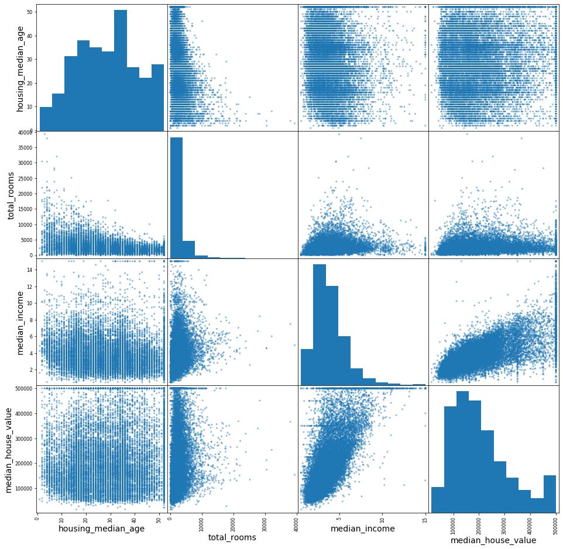

Background Info
Machine Learning in Real Estate
Comparative market analysis (CMA) is used to estimate the value of a home. This figure helps sellers
chose their asking price, and it helps buyers evaluate this price. The CMA is determined by recently
sold, and active listings that are comparable to the home that will be listed in the market. Creating
an actual CMA also takes into account:
- Neighborhood 'quality'
- Home features: age, number of bedrooms, rooms, house condition, potential issues, and recent upgrades
- CMAs produced by other estimators (Zillow, HouseCanary)
- CMAs of other homes in area
- CMAs of comparable homes in other neighborhoods
- CMAs of homes with similar lot features
Why is this important?
Since there are so many factors that can be considered in the calculation of a CMA, the algorithms
that are used can be complex, and resource intensive. To complicate matters, algorithms used in one
real estate appraisal system may vary across platforms, making it difficult to agree on an actual CMA.
Therefore there is a need for an advance computational method to estimate an CMA using large dataset
that take into account neighborhood, median housing prices, population, and housing features. This is
where machine learning can play an important role. Learning how to deploy various models to estimate
CMAs is an important practice for an ML ninja.
The project goal
Given the rational stated above, the goal of this project is to use three different supervised machine learning models
to estimate the median housing price (CMA) for homes in California, and determine which of these three perform the best.
Resources & Citations
- 1. Hands-On Machine Learning with Scikit-Learn, Keras, and TensorFlow, 2nd Edition, by Aurelien Geron (O'Rilley). 2019 Kiwisoft SAS, 978-1-492-03264-9
- 2. Data obtained from Handson-ml2, by Aurelien Geron. Dataset modified from R. Kelley Pace and Ronald Barry, "Sparse Spacial Autoregression," Statistics and Probability Letters 33, no. 3 (1997): 291-297
Research Objectives
Methods
Data
The dataset is a modification of Pace and Berry (1997), and consists of 10 features, and 20640
instances, each representing a 1990 Californian census block. The features in this dataset include:
geographical coordinates (lat, lng, proximity to the ocean), housing features (rooms, bedrooms, median
value), and census information (median age, population, median income). The target in this dataset is
the house value.
Analysis
The programming language Python was used in this project. Data was loaded and manipulated using the
pandas library. The matplotlib and seaborn libraries were used to visualize data. The scipy, and
sklearn libraries
were used in the machine learning models.
Objective
The goal of this project is to build a machine learning model that is able to predict the median
housing prices for California during the 1990s.
Results:
Households with high median value cluster around areas of the Californian coast.
To build a supervised machine learning model to predict the Comparative market analysis (CMA) of a house in a given area requires a known dataset. This known dataset is used to train an algorithm to would learn patters within the dataset that enables it to classify your target of interest. To this end, the 1990's census data was used to build a machine learning model. This dataset consists of 10 features: latitude, longitude, housing median age, total rooms, total bedrooms, population, households, median income, median house value, and ocean proximity. Of these features, the median household value is considered our target feature, as this is what we intend to classify (predict). The other features in this dataset will be referred to as the predictor features, as they will be used to train our model.
{kind=link}
Figure 1. 1990 US Census Californian Housing Price.
Exploratory Data Analysis (EDA).
Before building a model, it's important to conduct exploratory data analysis in order to assess if any predictors associate with the target variable. In figure 1, we see that the median house value tends to cluster along coastal cities, and we can surmise that the ocean proximity feature may be important, just like the latitude and longitude.
The next step is to evaluate the numeric features in the dataset, and we see in figure 2 that:
- The features have different scales.
- There are high peaks in the housing median age and median house value columns, which suggest that the data itself was capped, and will create an issue with any model we build as the algorithm will assume housing values do not exceed the cap.
- The features do not follow a normal distribution (they are tail heavy), which makes it harder for an algorithm to recognize patterns. We need to keep these features in mind as we build a model moving forward.
The next step in the EDA is to examine the correlation between various pairs of attributes in this dataset. This was accomplished using a scatter matrix for the numeric attributes house value, income, rooms, and age. In figure 3 we see that only median house value and median income of an area has a visible association, while the others do not. The pearson's r was calculated for these attributes and plotted for comparison. We see in figure 4 that latitude, longitude, and population have a negative Pearson's r value, while bedrooms, households, age, rooms, and income have a positive Pearson's r value. Moreover, we see that the Pearson's R value for median income is nearly 69%, and we can anticipate that this feature may play an important role in the training of our machine learning model.
Finally, before preparing the data for machine learning, it would be helpful to engineer new features that aren't in the dataset, but may be helpful. This can be performed by creating new features by performing some mathematical operation between existing features. For example, if we can assume that higher valued houses are in areas where there more than people, we can divide rooms by population, and create a new column. This strategy was then used to engineer the following features: rooms per people, rooms per households, people per household, people per room, and bedrooms per room. When we plot the Pearson's R for for these new attributes (Figure 5), we see that as predicted, rooms per people and rooms per household were positively correlation with the median house value, while bedrooms per room, people per room, and people per household were negatively correlated. Bottom line, we can conclude that richer people live with less people, and will have more space (more rooms), and will spend more on a house.
{kind=link}
Figure 2.Frequency distribution for numeric attributes in dataset.

{kind=link}
Figure 3. Scatter plot matrix for median age, income, house value, and total rooms.
{kind=link}
Figure 4. Correlation of features to median housing value.
{kind=link}
Figure 5. Correlation of engineered features to median housing value.
Prepare Data for ML Algorithms.
During the exploratory data analysis we noticed that the features were on different scales, and were not normally distributed (bell shaped). Before we can proceed build a machine learning model, the data must be wrangled, and transformed. The wrangling involved replacing missing values, and converting the categorical feature "Ocean Proximity" into a numeric field. The features are then scaled so that they are all approximately within the same numeric range. To this end, a transformation pipeline was used to conduct this in one step. SimpleImputer and StandardScaler were used to fill in missing values and then scale the numeric data, while OneHotEncoder was used to convert the categorical column into a numeric field. Figure 6 demonstrates the transformation of the features as box plots. Notice that each feature's range lies within -2 to 3.
{kind=link}
Figure 6. Distribution of data for features post feature scaling.
Linear Regression Model.
The Linear Regression model is the first algorithm we test, as it is the simplest, and most classic of the regression types. The root mean squared error (RMSE) was used as the performance measures in this model. The RMSE was $68,628, which is a high value, given that the range of house values is between $120,000 to $265,000. This value suggest that the model is under, and that we may not have enough features to provide the algorithm sufficient information to make better predictions.
When we plot the actual median values to the predicted median value (Figure 7), we see can see the impact of the household value cap, as there is a line at the top of the plot. Furthermore, if the RMSE was closer to 0, we would expect the cluster of points to convert closer to a line, the fact that the scatter is more diffused, provides additional support that the model is underfit.
{kind=link}
Figure 7. Association between the linear regression predicted median household value and the actual median household value.
Support Vector Machine Regressor
Since not all relationships are linear, it is important to test models that can detect patterns in complex nonlinear relationships in a dataset. The root mean squared error (RMSE) for this model was $111,094, which confirmed that this model performed more poorly than the Linear Regression model. This was in the scatter plot comparing the actual median house value to the predicted median house value in Figure 8. In this plot we see that the data is more diffuse than in Figure 7.
{kind=link}
Figure 8. Association between the Support Vector Regression predicted median household value and the actual median household value.
Ensemble Learning with RandomForestRegression.
The final model used in this post is an ensemble method, which combines several models that perform the best. In this approach, I used GridSearchCV and RandomForestRegression to build a predictive algorithm. GridSearchCV identifies the optimal hyperparameters, while RandomForestRegression is a method that trains many Decision Trees and averages out their predictions. By using this ensembled approach, the RMSE for this models was $49,660, this is an improvement over the Linear Regression model which has an RMSE of $68,628. The improvement in this model was also evident in the Figure 9, where we compare the predicted to the actual median house value. The scatter plot was less diffuse than the plots for the other models.
The feature importance scores were plotted to determine which features are important in this model. We see in Figure 10 that the median income remains the most important predictor (~0.33), followed by the geographic category "Near Ocean". Figure 1 did reveal that coastal regions had a high density of expensive houses, and this analysis supports that observation.
Finally, although the model performed well on the training dataset, we need to evaluate its performance on test data. When we carry out this analysis we see that the RMSE is $47,972, slightly better than the training dataset, while the scatter plot in Figure 11 resembles the scatter plot for the test set, although slightly more diffuse.
{kind=link}
Figure 9. Association between the Random Forest Regression predicted median household value and the actual median household value.
{kind=link}
Figure 10. Feature importance scores.
{kind=link}
Figure 11. Association between the Cross-Validated Random Forest Regression predicted median household value and the actual median household value.
Ensemble methods using RandomForestRegression outperforms Linear Regression and Support Vector Regression Machine Learning models.
In this post, we explored three different supervised learning algorithms. These models were trained used the 1990s US Census data to
predict the median house value. The goal of this project was to use this model, and this dataset, as a proof of principle in comparative market analysis. Current methods used to estimate the price of house can be daunting, and can vary depending on the factors used to arrive at this value. Machine learning on the other hand provides an approach that is both scalable, and reproducible. In this study we test linear regression, support vector regression, and random forest regression algorithms. We determined that the RandomForestRegression method, as part of an ensemble strategy, had the best measure of performance (The Root Mean Squared Error (RMSE)), than the other models tested. Although the RMSE was still a 95% confidence interval (data not shown), the prediction was still off by about 20%. I would argue that this estimate is not bad given the small number of features used in this analysis. Instead, this post highlights the utility of machine learning in automating complex calculation that can help sellers, and buyers make transactions grounded on advance, and readily available methods. In fact, this model can only be improved by adding additional meaningful predictors, reminding us that machine learning is not only powerful, but flexible.
{kind=link}
Figure 12. Comparison of model performance in predicting median house values.